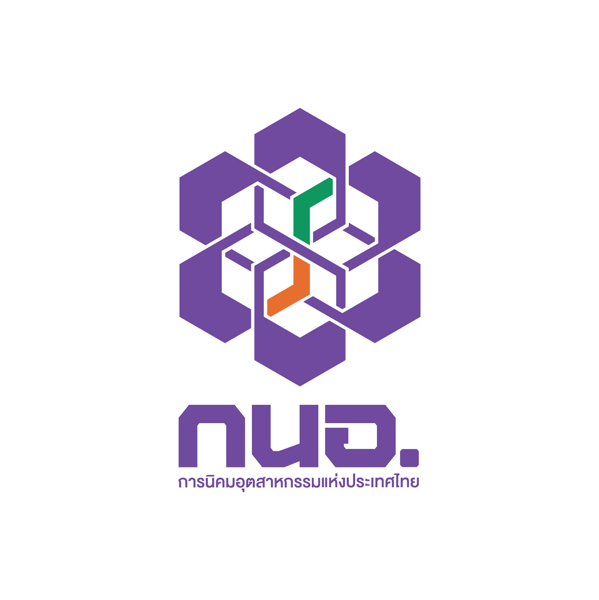

ข้อมูลความเสี่ยงผู้ประกอบการ
| กลุ่มความเสี่ยง | รายการ | เกณฑ์ต้นทาง |
|---|
…เข้าข่ายอย่างน้อย 1 กลุ่ม…ไม่ได้ระบุเข้าข่าย
แต่ละกลุ่มอาจมีรายการซ้ำกัน นับตามฟิลด์ที่ระบุ “เข้าข่าย” ในฐานข้อมูลผู้ประกอบการ

EMCC GISศูนย์เฝ้าระวังสิ่งแวดล้อมและความปลอดภัย| กลุ่มความเสี่ยง | รายการ | เกณฑ์ต้นทาง |
|---|
แต่ละกลุ่มอาจมีรายการซ้ำกัน นับตามฟิลด์ที่ระบุ “เข้าข่าย” ในฐานข้อมูลผู้ประกอบการ
การไม่ได้ระบุเข้าข่ายไม่ใช่การยืนยันว่าโรงงานมีความเสี่ยงต่ำ
สัดส่วนจำนวนจุดโรงพยาบาล ดับเพลิง ตำรวจ ชุมชน หัวจ่ายน้ำ และ CCTV ตามตัวกรอง
แสดง 8 พื้นที่แรก เรียงตามจำนวนเข้าข่ายสูงสุดในกลุ่มใดกลุ่มหนึ่ง
| นิคมอุตสาหกรรม | 12 ประเภท | อัคคีภัยสูง | PSM | รายการทั้งหมด |
|---|
ความเข้มของสีแสดงจำนวนรายการ ไม่ใช่ระดับโอกาสเกิดเหตุหรือความรุนแรง
คลิกรายการเพื่อดูตำแหน่งและรายละเอียดบนแผนที่
แหล่งข้อมูล: ตำแหน่งนิคมฯ e_PP_2025, ข้อมูลผู้ประกอบการ_e_PP, Hospital_Locations, Risk_Map_WFL1, Map และตำแหน่งกล้องCCTV · ตัวเลขนับตามรายการ / แปลงในแต่ละชั้นข้อมูล อาจมีผู้ประกอบการที่มีหลายแปลง · ระหว่างโหลดจะแสดงข้อมูลเท่าที่ได้รับ